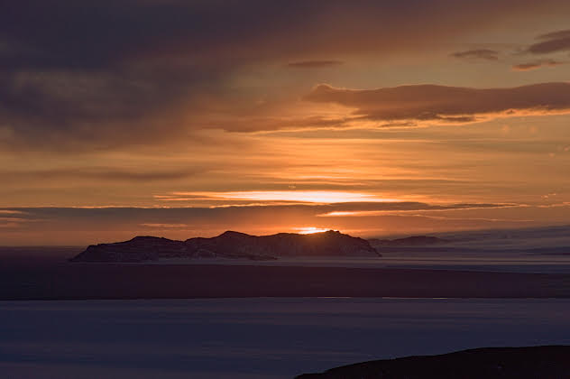
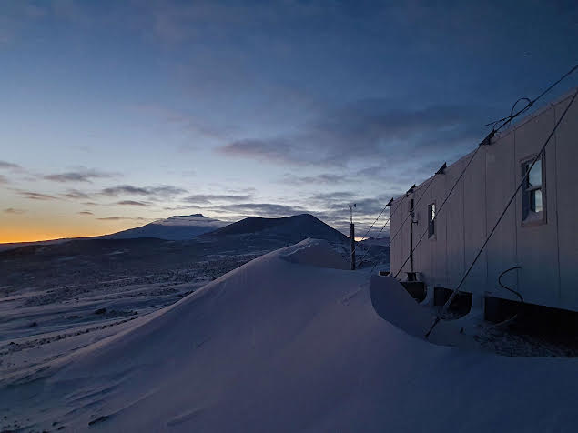
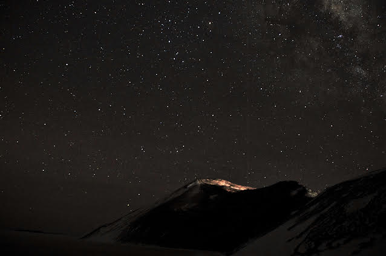
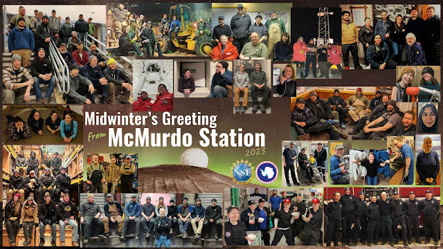
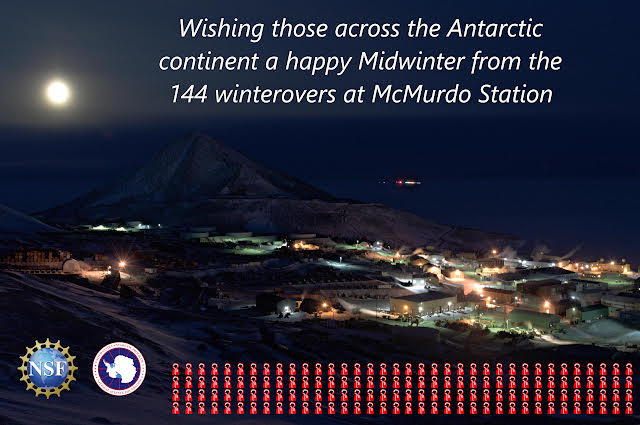
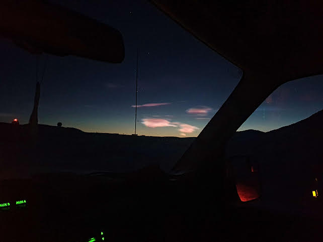
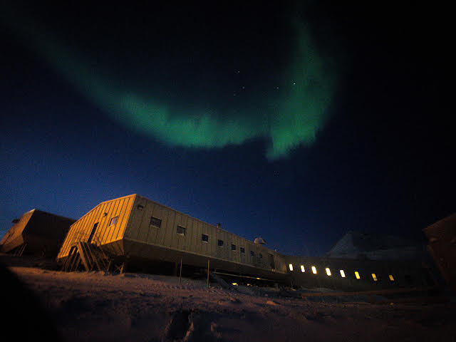
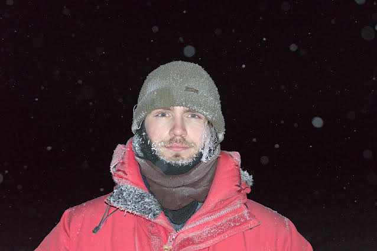

Longren Antarctic Newsletter #08 - 02.08.2023 ------------------------------ Dearest people, I hope you have been well since I last wrote. In the last half year, the seasons have changed from summer to winter here in Antarctica, and now they are changing back to summer once more. While during the summer season I worked in the cargo department, over the winter I worked in the lab supporting the science that is being conducted here. Mainly, my work involves making sure that all of the devices (such as cameras, radios, and other light detectors) are functioning properly. I've had a great time doing so, in no small thanks to the beautiful scenery that Antarctica provides in the cold, dark winter months.  April 23rd, 2:14pm The last sunset for the winter. Towards the poles of the Earth, a year really feels like it can be broken into two seasons: summer and winter. For Antarctica specifically, summer runs from October until March and winter from April to September. Seeing the sun set for the last time is a big event, as it won't be seen again for four months.  May 13th, 12:35pm A view from the area where I work. In the distance, a crater is seen that houses a radio antenna used to collect scientific data. Behind the clouds lies Mt. Erebus, a nearby volcano. A majority of the projects that I take care of are sensitive to artificial light. They take advantage of the fact that, during the winter, Antarctica is in the dark around the clock. Then, the cameras take pictures constantly for over four months. Some of the topics of study include low-frequency radio wave propagation, gravity waves in the atmosphere, and auroras. As I don't want to interfere with the cameras' data collection with headlights or flashlights, I conduct all of my work in the dark, including driving up to the hut in complete darkness. The moon is a good friend when it is out.  May 29th, 12:26am A view of the sky at its darkest. If you look closely above the hill, a laser pointing up can be seen. At the base of the laser are the huts where I work, with atmospheric data collection being run around-the-clock by two scientists. Another big event that happens in the winter at Antarctic stations is Midwinter, a name for the winter solstice which occured on June 21st this year. Every year, all of the stations around Antarctica send out greeting cards to each other. There's always a big dinner in celebration to cherish the time with fellow winterovers and mark the start of the sun's return back to the continent.   The Midwinter greeting card from McMurdo Station (top), along with my entry for the card (bottom) In my eyes, the best part of wintering over in the polar regions is what's happening up above in the sky. While the sun is below the horizon for much of the season, the atmosphere bends the light to provide seemingly day-long sunrise and sunsets for months at a time. When the sun finally departs for good, the southern lights shine. Though, not too often! Where I am on the edge of the continent, we are within the ring of strong geomagnetic activity. Therefore, we don't get aurora strong enough to see too often. Maybe once every few weeks I can catch them flickering in the sky. Into July and August, the sun is starting to return and with it the most beautiful polar clouds. I believe I've only seen them twice, but nacreous "mother of pearl" clouds are my favorite sky object to see appear.  July 8th, 12:51pm Polar stratospheric, or nacreous, clouds seen on a drive outside of town.  July 17th, 12:40pm Auroras at noon above the Crary lab. Time has flown by. It's now August and I am planning redeployment back to the human side of the world. I'm scheduled to leave the middle of October, at which point I'll be traveling New Zealand and the USA for a pair of months. Afterward, I'll be back in Berlin for the start of the new year and who-knows-what then. I will send out one final letter in October with more news, such as how pale I've gotten and what it's like to see the station's population double with a single incoming August flight (man, I am not ready to see so many people around here). In the meantime, stay well.  July 26th, 2:36pm Thanks for reading. Warmly, Luke ------------------------------ ------------------------------ |